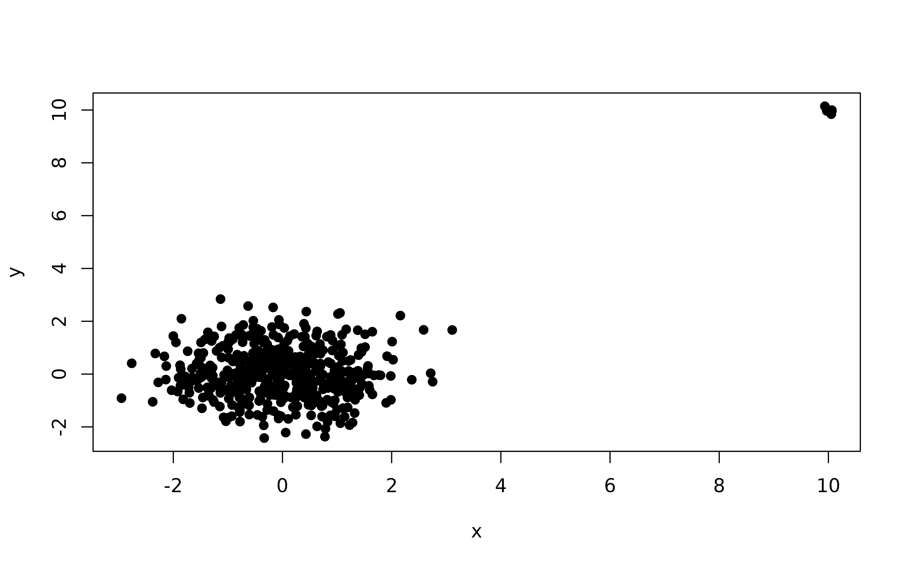
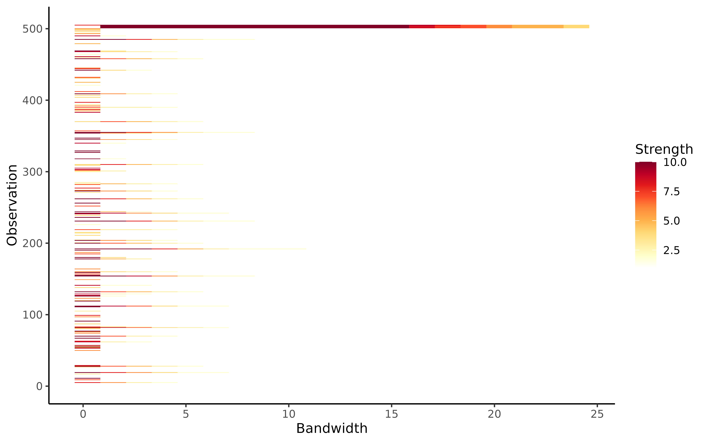

Plots outlier persistence for a range of significance levels.
Source:R/autoplot_persistence.R
autoplot.persistingoutliers.RdThis function plots outlier persistence for a range of significance levels using the algorithm lookout, an outlier detection method that uses leave-one-out kernel density estimates and generalized Pareto distributions to find outliers.
Usage
# S3 method for class 'persistingoutliers'
autoplot(object, alpha = object$alpha, ...)Examples
X <- rbind(
data.frame(
x = rnorm(500),
y = rnorm(500)
),
data.frame(
x = rnorm(5, mean = 10, sd = 0.2),
y = rnorm(5, mean = 10, sd = 0.2)
)
)
plot(X, pch = 19)

outliers <- persisting_outliers(X, scale = FALSE)
autoplot(outliers)
